Specialty coffee and tea barLife is too short to drink bad espresso.
Names and prices come from our Wolt menu for Sarajevska 14. They can differ at the other two.
Our blends, roasted in-house. Whole bean or freshly ground, your call. Ask us what is on the shelf right now.
Provisional: the blend names, notes and prices are not confirmed yet.
Ask us by message on Instagram or call +381 11 630 0563.
The same goes for the beans of the week: this list is a placeholder until we confirm what is on the shelf.
That's why we pick our beans with care, roast them ourselves and pour every cup like it's ours. Because it is.
See the shop →Sarajevska 14
Mon–Fri 07:30–23h · Sat and Sun 09–23h
Breakfast, salads and mains are made here. This is the only one that delivers.
Order delivery on WoltTrg Nikole Pašića 5
Mon–Fri 08–23h · Sat and Sun 09–23h
Coffee first. Delivery does not run from here.
Opening hours come from the shops' public listings and are not confirmed by us yet.